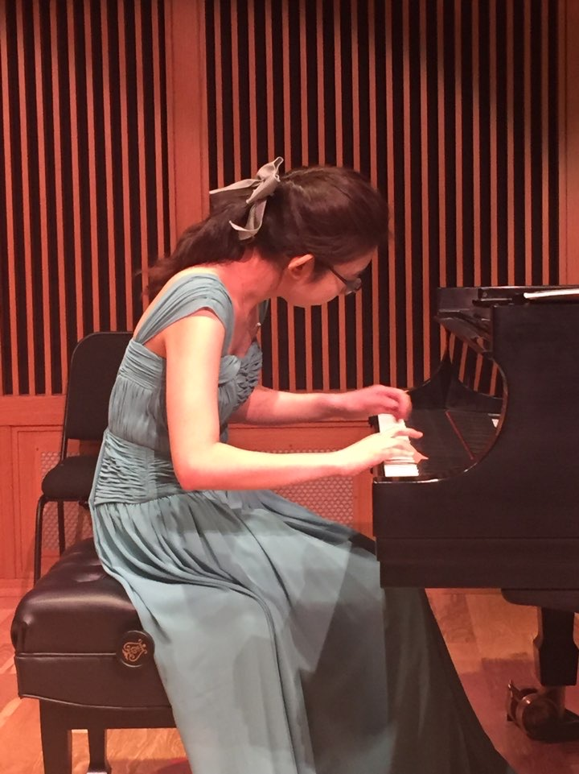
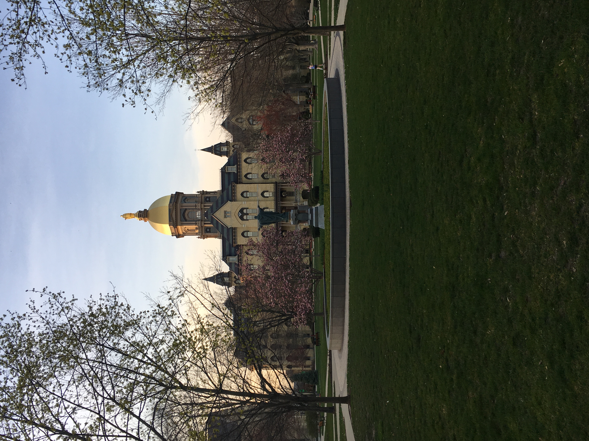
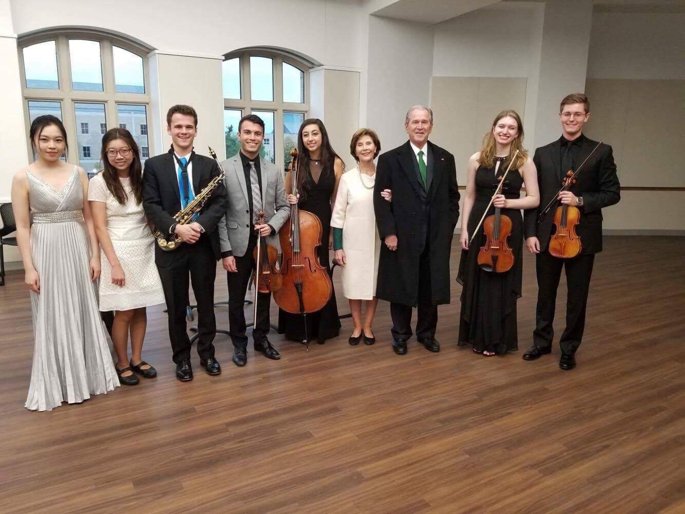
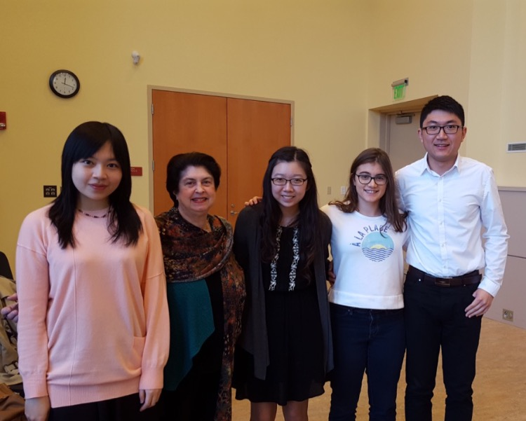
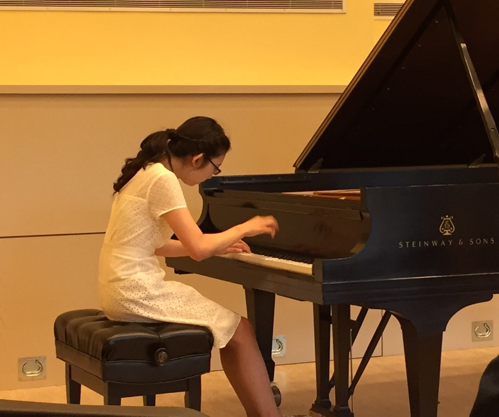
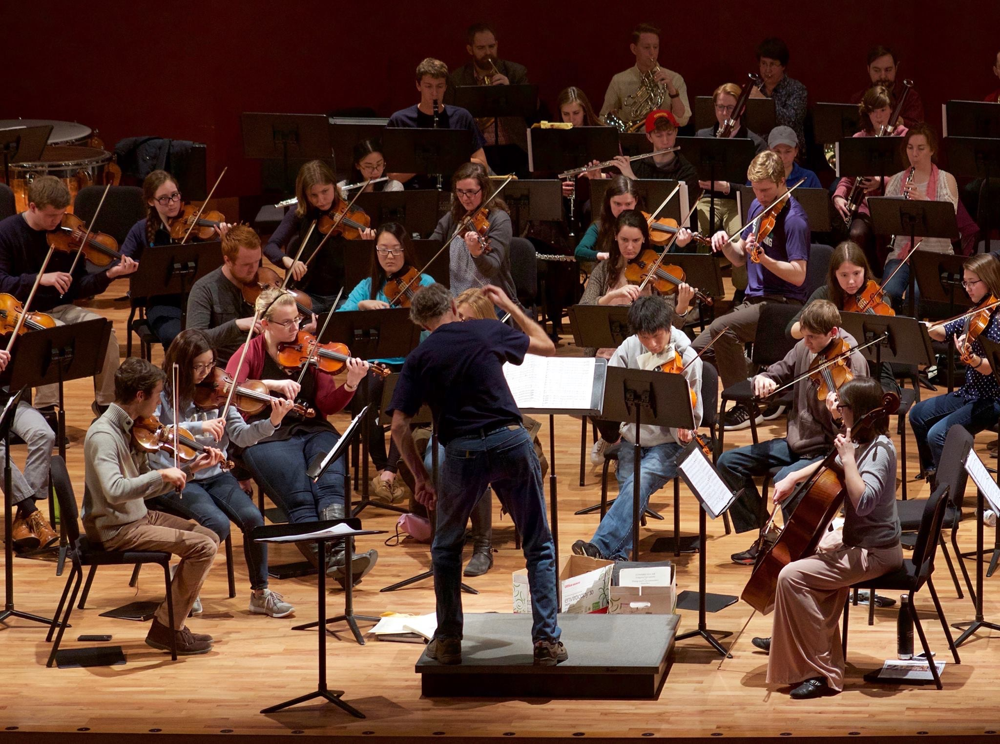
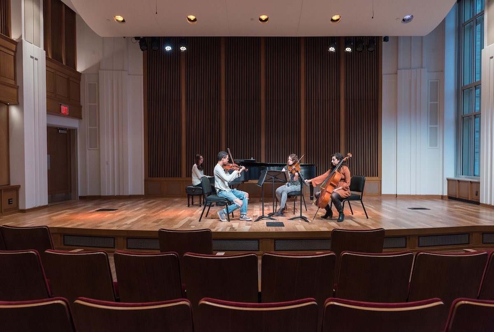
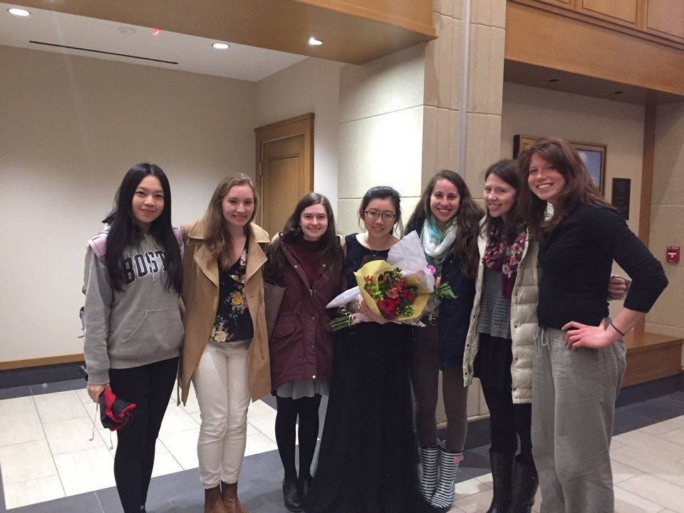
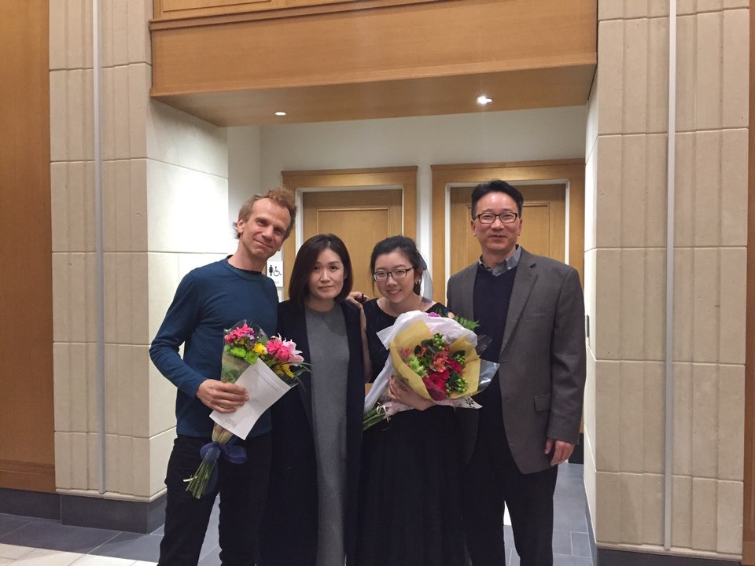
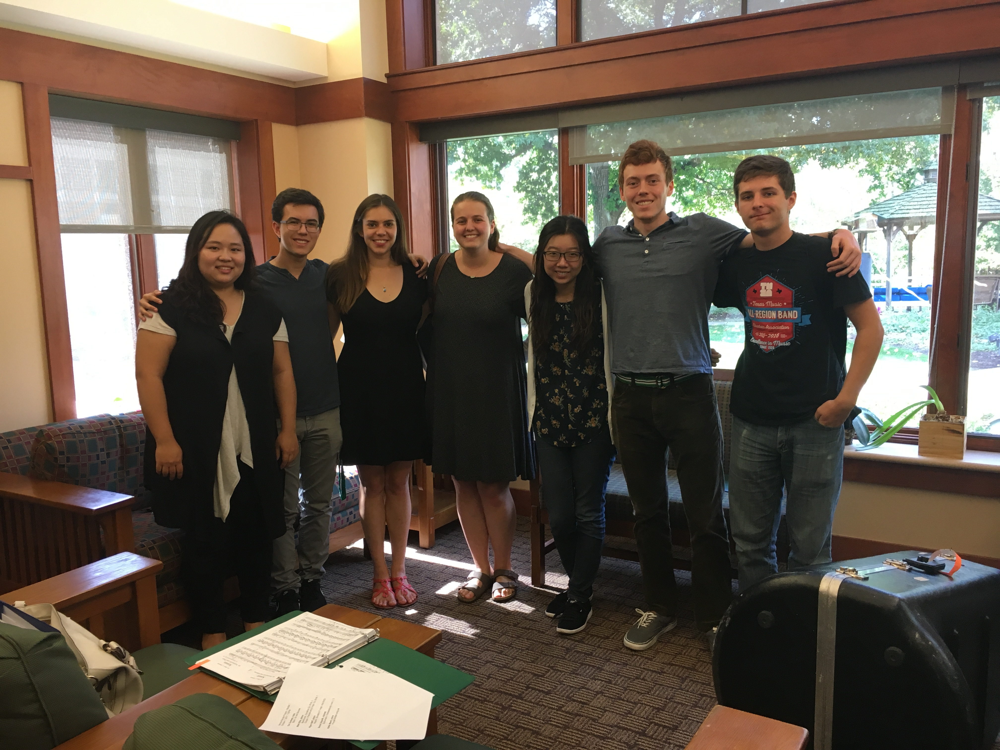

I probably won't include this page on a real portfolio, but I thought I'd use this opportunity to write about my musical experiences. I began playing the piano at age 8 in my hometowm of Birmingham, Alabama. Throughout high school, my passion for the instrument grew exponentially, and I also found success in various state and regional piano competitions. I also began playing the violin at age 7 and performed in various youth orchestras. For college, I seeked a school that would encourage me to double major in piano performance and a STEM field, and Notre Dame, given its community, catholic identity, and reputation, was a great fit, not just as a place I could double major, but a place where I could grow as a person in faith.
 The small size of Notre Dame's music community allowed me to pursue performance opportunities that not everyone in a major conservatory could get. I got to play in masterclasses for world-renowned pianists such as Stephen Hough, Victor Rosenbaum, Ann Schein, Roger Vignoles, and others. I performed three solo recitals, each with a unique program, as well as in smaller department recitals and chamber music concerts. I was regularly recruited to play in Composers Concerts, as well as in colleagues projects and recitals. I was also a violinist in the Notre Dame Symphony Orchestra, and served as its assistant concertmaster in my sophomore year. During my junior year, I was the pianist for the orchestra's performance of Stravinsky's Petruska - this was my first time playing piano in an orchestra!
I was invited to perform at the O'Neill Hall of Music Dedication performance. George and Laura Bush heard me play!
Fellow piano majors and I after performing for pianist Ann Schein!
Sophomore recital
Notre Dame Symphony Orchestra
Photoshoot for the new music building!
Me with friends and family after my junior honors recital
 I also led a recital project for patients at dementia care homes. Here is my team and me at one of our recitals!
While I loved every single one of my performance opportunities in school, the barriers to entering the classical music industry, as well as the stress and anxiety that came with performing in front of people, kept me from seeking to pursue music professionally. However, weirdly enough, I do see parallels between music and my career path of UX Design. Both musicians and UX professionals work toward a tangible end product, learning and discovering processes along the way. Both music and UX require high levels of persistence and creativity to create a unique final product that can be shared with others. I believe that my training as a musician will enhance the way I approach design problems as I strive to become a dedicated UX professional.